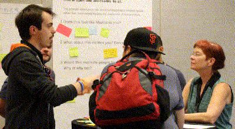

WordPress üáÆüáπ Community Member/Translator/Developer
Industria Italiana del Software Libero Vice Presidente
Mozilla is a free-software community, [...]. The Mozilla community uses, develops, spreads and supports Mozilla products, thereby promoting exclusively free software and open standards [...]. The community is supported institutionally by the Mozilla Foundation [...]. https://en.wikipedia.org/wiki/Mozilla
What I do in Mozilla?

MozItalians
Mozilla
Representative
Reps Council
TechSpeakers
Campus Club Regional Coordinator
Tech/Open Source Evangelist Speaker
Promozione sui social e articoli
Traduzione di software e documentazione
Organizzazione eventi
Reclutamento e Mentoring di nuovi Volontari
Development:
WordPress e HTML apps
Estensioni per browser
Contributi: es. mozillians.org, reps.mozilla.org, Open Design
Una iniziativa Open Source per documentare e spiegare come si stia evolvendo la salute di Internet, raccogliendo e ricercando informazioni su cinque argomenti chiave.


 Siamo volontari e possiamo:
Siamo volontari e possiamo: